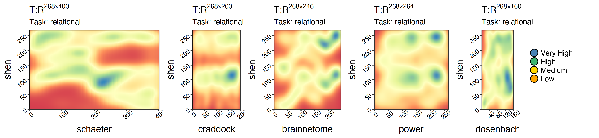
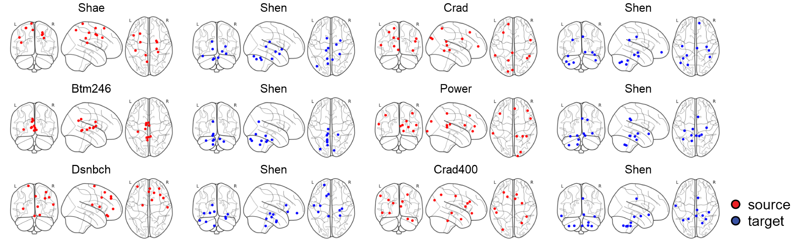
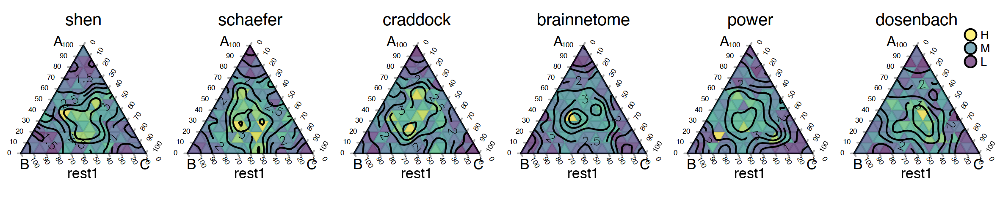
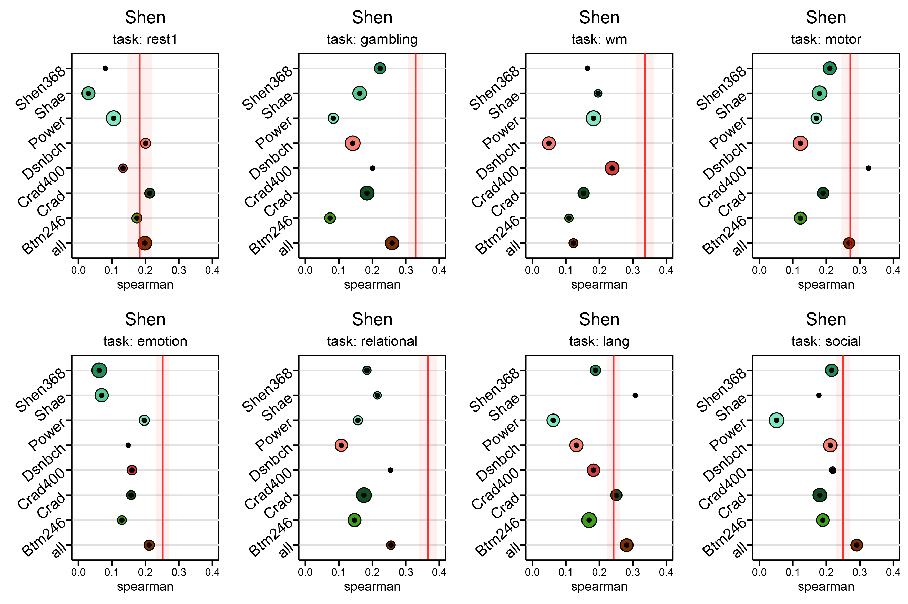
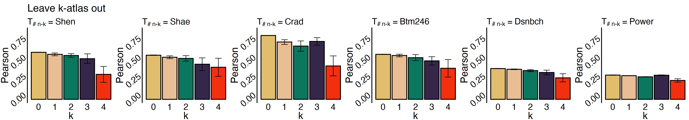
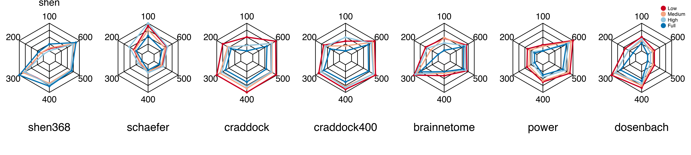

How to Manage 100k+ Experiments on Brain Imaging Datasets
Ph.D. students studying machine learning on the human brain must conduct massive experiments on brain imaging datasets. When they deal with big datasets, some students get overwhelmed with many experiments and need help managing them because sometimes they need a clear plan for developing scripts, saving results, and visualizing experiments.
To encourage these students to adopt similar ideas in their papers, we will discuss one brain imaging study that required us to perform at least 100k experiments and immense visualizations. To prevent writing duplicate codes and to quickly recover a portion of your experiments when an error or typo in your preprocessing is discovered. Our first paper on this was published in Nature Human Behavior, and the optimal transport example was presented in MICCAI 2021.
Experiment 1: Data-driven mappings and Optimal Transport
This research aims to transform a dataset that has been preprocessed in various brain atlases. As a result, evaluating a machine learning model trained on another atlas is impracticable. Our strategy is to identify a data-driven mapping and then apply it to our dataset to estimate images that could be derived from the missing atlas.
For example, each of the graphs below represents a mapping between a source (x-axis) atlas and a target (y-axis). Each plot is the result of training on a random portion of the human connectome project (HCP) and will later be tested on the subjects who were left out to assess their qualities. Furthermore, for each person, we have eight different types of data correlating to other tasks and one resting scan (i.e., nine sets of visualizations in total).

|
|
Rule 1: Do not write a script unless a function for your code has been defined.
It was time to determine which brain regions were accountable for the highest transportation based on the policies we had learned. We used different atlases and visualized the nodes based on the coordinates of each one.

Except for the surface plots, all our plots are in R. However, in both cases, we never plotted each graph individually to be merged later in Adobe Illustrator. For example, in R, we defined a function named my_plot<-function(c_data, source, target, task) to save all possible eight plots into a list called my_plots <- list(). This is to avoid situations when we change the plot, caption, or color and have to start over. We saved a lot of time by putting ourselves under this discipline.
|
|
It’s time to define our second rule:
Rule 2: As far as possible, combine your visuals into a single script. Don’t create images with similar styles that will be connected, aligned, or captioned later.
Experiment 2: Simplex and Intrinsic Evaluations
In this set of experiments, we’ll run optimal transport over a simulation dataset and three target atlases to see how our algorithm works. To do this, we need to run the Sinkhorn function three times with different arguments each time.

This is the python function we used for this experiment. A simple function that calls the previous Sinkhorn function. Luckily, we avoided writing duplicate code three times.
|
|
Experiment 3: Downstream Analysis: All in one plot
Now, it’s time to plot a lot of experiments in a big way. For all pairs of atlases, including one and all-way OT, to get there. Let’s say we need one plot for a specific task that shows how well it predicts IQ when optimal transport is used on all other atlases. We’ll need eight different plots to do this for all of our other tasks. We decided to use dot plots where the y-axis is the source, and the x-axis is the performance for the given task and the target. This way, we can see how well we did overall.

In this graph, the red line is the best value we got from preprocessing, and the radius of each dot shows the standard deviation for 100 exams. These graphs show the results of experiments that took place throughout $8 \times 8 \times 100 $ trials. We may need to do the same in our supplementary material for all the $8$ targets. But, it will only take a few seconds if you have defined proper functions.
How can you save the results that will be used for visualization? To answer this question, let’s first talk about your scripts. We suggest you add as many arguments as possible to keep your hands flexible. We don’t recommend preliminary solutions like introducing these variables within your primary function and changing them on demand.
|
|
Here’s an example of a bash script that uses the Shen atlas as the source, Craddock as the target, and working memory as the specified task.
|
|
Rule 3: Make sure your scripts have arguments: set default values for them, say what types they are, and call your functions through a primary function via appropriate statements.
Experiment 4: Dataset simulation
In this case, we were asked to run another set of experiments to simulate a dataset that had only been preprocessed on a few atlases. Suppose we want to remove k atlases one by one and see if our algorithm can them or not.

We may need to define a new function named all_way_ot:
|
|
Now, you have two options to implement sinkhorn_n: To make it work, you could either call the original sinkhorn several times and merge the results, or you could make a function like Sinkhorn that takes into account $n-k$ brain mappings. Here, we’ll let you figure out which is the best choice for your case.
Experiment 5: Parameter Sensitivity
So far, we’ve done an excellent job setting up the functions we need for our experiments. Now, we want to see how our algorithm reacts to changes in the free parameters we can choose from. There is a pentagon plot that we will use to look at the sensitivity of the frame size and training size. If you have a wider frame size, there are fewer transportation plans, and there could be more robust policies when there are more training plans. We will use the same visualization principles (i.e., Rule 2) and modularized coding (i.e., Rule 1,3).

But, we start to notice that there is a new problem. How to save new results and transmit them to visualization units?
Using the correct naming conventions is very important to us. For example, the panda data frame that shows your results (source, target, and task) is an excellent way to keep track of them. You can quickly load them into your visualizations.
|
|
It’s also good to have naming conventions so that you can run your scripts again and again on different CPUs.
In our example, we have defined a function named shuffle_list(atlases) that every time we run our script, it’s more likely that a new combination of arguments will be called as we skip a variety that is already existing by os.path.exists(filename).
|
|
Rule 4: Use naming conventions that inform enough about your experiment. These will be loaded into your visualization units with the relative arguments in the file names.
In our project, we found a mistake when processing dosenbach and power atlases. Rule 4 helped us get all the results and plots back in less than five days. Do you know what our strategy was here? We only removed the files that include dosenbach and power as names and called the bash scripts we already had for these two cases. Given $20$ processing units and around $65$ Gbs of memory, we reached the scripts repeatedly.
Rule 5: Once you notice a mistake in the first steps, delete the files linked to your fault and call your script from scratch. If you have followed the previous rules, none of your central units, such as your visualization, will be affected.